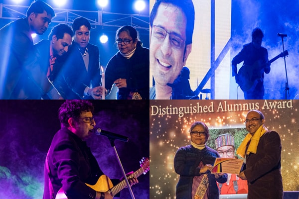

***FEEL FREE TO ASK ANYTHING ON biswas.subhagata20@gmail.com***
Campus Life
Vivekananda Mission School is affiliated to the Council for Indian School Certificate Examinations, New Delhi. The School prepares students for ICSE and ISC examinations at 10+2 level.Founded in the year 1978 by Mr. C.G.Chandra, an educationist and social worker, the school set out its journey with the sole objective of imparting “Man-making and Character building” education to the children who enroll themselves with the school.
With the passage of time and the advent of changing situations all over the world it has been felt that producing academically brilliant students is merely not enough to uphold and realize the tenets of man making education as Swamiji had envisioned. It requires also a lot of commitment and understanding of social situations by the children to build up their emotional and mental well- being. This has called for a paradigm shift which focuses on developing social skills of the children through different Community Action Programmes.
The School imparts education without any distinction of caste, creed and belief. The secular credentials of the school have endeared it to all and sundry who have high regards for its discipline, scientific teaching methods and moral values. One of the most important features of its learning paradigm is its community based education models which help the children to understand and recognize the issues afflicting multicultural communities in our society. One of the distinctive features of the school is ‘The Emotionally Intelligent Parenting’ which was introduced by our Founder Sir. Such sessions are held regularly at school for the parents.
VMS is acknowledged as a school with a difference because of its approach and applications. It is a pioneering school in Eastern India to introduce the concept of Quality in Education. At present every section of each class from IV to IX has its own Quality Circle to benchmark their standard and goal. The QCs have taken part in National and International competitions and have won accolades time and again. The excellent academic results of VMS students in Board examinations have carved a niche for the school in the field of school education. Our Founder Sir was the first educationist to introduce Quality Concept in the field of education.
With the accelerated pace of wide ranging education reforms, VMS is ready to embrace the challenges of the new world order. The school started to add an international dimension to its curriculum through various projects and partnerships since 2005. We have been successfully accredited with the ISA for three consecutive terms 2006 – 2009, 2010 – 2013 and 2014 – 2017. We have also received the Reciprocal Visit Grant in 2007 and worked with Sydenham Primary School, Leamington Spa, till 2011 on various projects. Both the fund and the award were given by BRITISH COUNCIL.
Teachers from countries across the world have visited and interacted with our teachers and teachers from VMS have also visited schools in England. It has been an interesting journey that has involved out of the box thinking, global outlook, internationalization, resourcefulness, creativity and a desire to change the teaching and learning process from being a chore to becoming an exciting journey of discovery and exploration.
Achievements
1.Dronacharya Award by Peerless and ABP Pratibha received by the Principal ,Sarmishtha Banerjee.
2.Award from iLEAD Foundation for outstanding Biology Teacher,Anindita Majumdar.
3.The Best International Teacher for SOF INTERNATIONAL ENGLISH OYMPIAD for the Year 2018-19. Received by Sahana Sen
Alumni

Alumni
Good Alumni relations benefit alumni as well as the institution. If you support your alumni in professional and personal lives through different activities, then they are likely to be our life long supporters. Our support may also help our alumni achieve portions of success and influence which will in turn benefit our institution as begin to give back.
We had the great pleasure of organising the 1st alumni meet on 6th January 2018. It was yet another opportunity to reminisce on the old times and find out more about what was currently happening in the school.